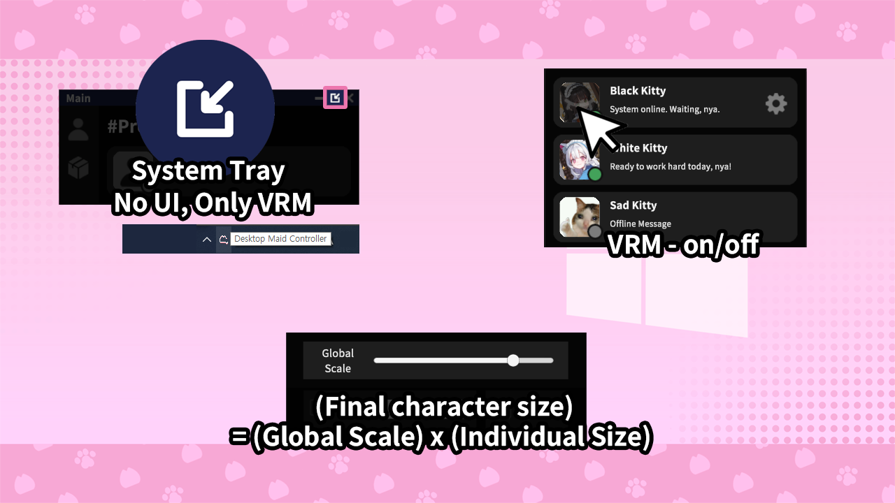

🔹 상호작용 설정 가이드 (5)

더 편리한 기능들을 활용해 캐릭터와의 시간을 즐겨보세요.
UI 트레이: 윈도우 작업 표시줄의 트레이 아이콘을 통해 앱을 관리할 수 있습니다.
캐릭터 사진: 현재 화면을 캡처하여 캐릭터의 모습을 저장할 수 있습니다.
글로벌 스케일: '전체 크기 x 개별 크기'로 최종 캐릭터 크기가 결정되니 주의하세요!
← 이전 단계
다음: 환경설정 가이드 →